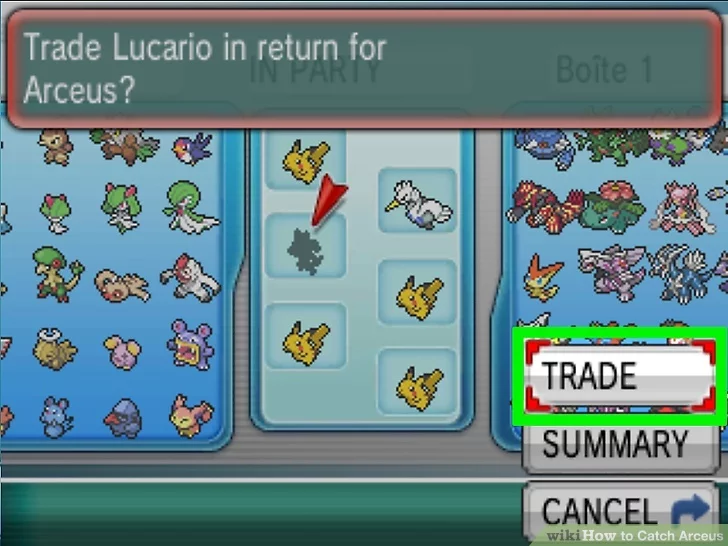
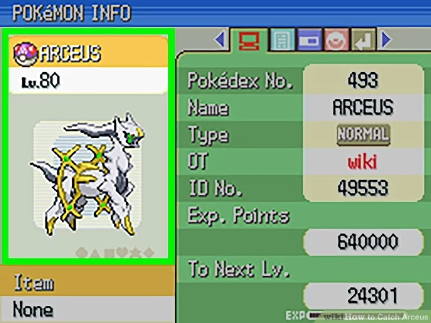

Arceus è probabilmente uno dei Pokèmon più rari e sfuggenti di tutto il franchise dei mostriciattoli tascabili in quanto è sempre stato possibile ottenerlo solamente tramite eventi speciali. Per mettere le nostre mani su uno di questi esemplari sarà quindi necessario riceverlo tramite scambio con un altro giocatore oppure, in maniera illegittima, utilizzre trucchi di gioco che ci permettono di attivare i vecchi eventi tramite i quali è stato rilasciato. Questi eventi funzionano su tutti i titoli rilasciati da The Pokèmon Company per Nintendo DS ma per ottenerlo sui titoli progettati per la nuova versione della console portatile, il Nintendo 3DS , sarà necessario scambiarlo.
Come abbiamo detto per ottenere Arceus senza trucchi sarà necessario scambiarlo, per fare ciò il primo step è quello di ottenere il Pokèdex Nazionale. Il Pokèdex, ovvero il ricettacolo digitale che ci permette di tenere traccia dei Pokèmon incontrati durante la nostra avventura, può essere aggiornato dalla versione Regionale, che include i Pokèmon della sola quarta generazione alla sua versione Nazionale. Fare questo ci permetterà di scambiare con altre versioni dei giochi.
A seconda della versione del gioco di quarta generazione gli step per sbloccare la versione completa del Pokèdex sono le seguenti:
Essendo Arceus un Pokèmon così raro, per convincere qualcuno a scambiarlo per uno dei nostri mostriciattoli tascabili bisognerà essere disposti ad offrire qualcos'altro di egual valore. Questo potrebbe essere un altro Pokèmon unico ottenuto tramite evento che l'altra persona non possiede, oppure un Pokèmon Shiny, ovvero un Pokèmon che presenta una palette colori diversa da quella base e che compare randomicamente con una probabilità di 1 su 8192!
Se non si vuole perseguire la via dello scambio perchè si possiede già una copia di Arceus e si vorrebbe trasferirla su un nuovo titolo della serie è possibile utilizzare il servizio online Pokèbank. Questo spazio virtuale può contenere migliaia dei nostri Pokèmon e permette di trasferire da un titolo all'altro, posseduti dallo stesso giocatore, quelli che preferiamo. Se si è quindi in possesso di una copia di Arceus può essere sufficiente caricarla nella propria banca Pokèmon per poi ritirarla sull'ultimo titolo rilasciato!
